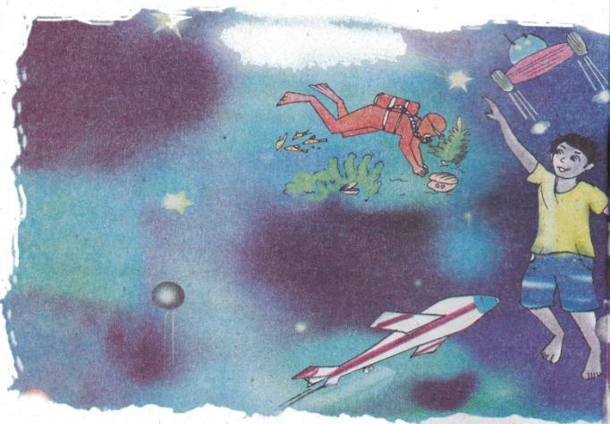

সংকল্প
কাজী নজরুল ইসলাম
থাকব না ক বদ্ধ ঘরে
দেখব এবার জগৎটাকে
কেমন করে ঘুরছে মানুষ
যুগান্তরের ঘূর্ণিপাকে।
দেশ হতে দেশ দেশান্তরে
ছুটছে তারা কেমন করে,
কিসের নেশায় কেমন করে
মরছে যে বীর লাখে লাখে।
কিসের আশায় করছে তারা
বরণ মরণ-যন্ত্রণাকে।
হাউই চড়ে চায় যেতে কে
চন্দ্রলোকের অচিনপুরে,
শুনব আমি ইঙ্গিত কোন
মঙ্গল হতে আসছে উড়ে।
পাতাল ফেড়ে নামব আমি
উঠব আমি আকাশ ফুঁড়ে,
বিশ্বজগৎ দেখব আমি
আপন হাতের মুঠোয় পুরে।
(সংক্ষেপিত)

অনুশীলনী
১. কবিতাটির মূলভাব জেনে নিই।
অসীম বিশ্বকে জানার এক অদম্য কৌতূহল মানুষের। কিশোরেরও তাই। সে জানতে চায় বিশ্বের সকল কিছুকে। আবিষ্কার করতে চায় অসীম আকাশের সকল অজানা রহস্যকে। সে বুঝতে চায় কেন মানুষ ছুটছে অসীমে, অতলে, অন্তরীক্ষে। বীর কেন জীবনকে অনায়াসে বিপন্ন করে, কেন বরণ করে মৃত্যুকে। সে জানতে চায় দুঃসাহসী কেন উড়ছে। তাই কিশোর মনে মনে প্রতিজ্ঞা করে – সে বদ্ধ ঘরে বসে থাকবে না। পৃথিবীটাকে সেও ঘুরে ঘুরে দেখবে।
২. শব্দগুলো পাঠ থেকে খুঁজে বের করি, অর্থ বলি এবং বাক্য তৈরি করে বলি ও লিখি।
|
সংকল্প |
বদ্ধ |
যুগান্তর |
|
দেশান্তর |
বরণ |
মরণ-যন্ত্রণা |
|
দুঃসাহসী |
চন্দ্রলোক |
অচিনপুর |
|
ফেড়ে |
৩. একই শব্দের বিভিন্ন অর্থ শিখি ও বাক্য তৈরি করি।
|
সংকল্প - |
প্রতিজ্ঞা |
ভালো কাজের জন্য সবাইকে মনে মনে প্রতিজ্ঞা করা উচিত। |
|
বদ্ধ - |
বন্ধ | |
|
দেশান্তর - |
অন্যদেশ | |
|
জগৎ - |
পৃথিবী | |
|
ইঙ্গিত - |
ইশারা | |
|
বরণ - |
সাদরে গ্রহণ | |
৪. নিচের প্রশ্নগুলোর উত্তর বলি ও লিখি।
ক. কবি বদ্ধ ঘরে থাকতে চান না কেন?
খ. যুগান্তরের ঘূর্ণিপাকে মানুষ ঘুরছে বলতে কী বোঝ লেখ?
গ. চন্দ্রলোকের অচিনপুরে কারা যেতে চায়?
ঘ. কিসের আশায় বীর মরণকে বরণ করছে?
ঙ. কবি হাতের মুঠোয় পুরে কী এবং কেন দেখতে চান?
৫. ক্রিয়াপদের সাধু ও চলিত রুপ শিখি।
|
চলিত রুপ |
সাধু রুপ |
|
আঁকব |
আঁকিব |
|
দেখব |
দেখিব |
|
ঘুরছে |
ঘুরিতেছে |
|
মরছে |
মরিতেছে |
|
ছুটছে |
ছুটিতেছে |
|
আসছে |
আসিতেছে |
|
চলছে |
চলিতেছে |
৬. ক্রিয়ার কাল সম্পর্কে জেনে নিই।
ক. আমি কাজটি করি।
আমি কাজটি করেছিলাম।
আমি কাজটি করব।
উপরের বাক্যগুলোতে ব্যবহৃত করি, করেছিলাম ও করব – এগুলো ‘করা’ ক্রিয়াপদটির বিভিন্নরুপ। যে সময়ে ক্রিয়া বা কাজটি সম্পন্ন হয় সেই সময়টিকেই ক্রিয়ার কাল বোঝানো হয়েছে। যেমন বর্তমান কাল, অতীত কাল, ভবিষ্যৎ কাল।
খ. নিচের বাক্যের ক্রিয়াবাচক শব্দগুলির নিচে দাগ দিই।
আমি বড় হয়ে মানুষের জন্য কাজ করতে চাই।
আমি আমার দক্ষতা অন্যের উপকারে ব্যবহার করি।
৯কিশোর বর্ষাকালে তার গ্রামে গাছ লাগাবে।
তরুণ চিকিৎসক হবে। মানুষের চিকিৎসা করবে।
গ. নিচের ভবিষ্যৎ কালবাচক ক্রিয়াপদগুলোকে বর্তমান ও অতীত কালবাচক ক্রিয়াপদে রুপান্তর করি।
|
থাকব |
দেখব |
শুনব |
খাব |
বেড়াব |
ঘুরব |
|
পড়ব |
খেলব |
চড়ব |
নামব |
ধরব |
হাসব |
|
ভবিষ্যৎ |
বর্তমান |
অতীত |
|
থাকব |
থাকি |
থেকেছিলাম |
|
…………………… |
…………………… |
…………………… |
|
…………………… |
…………………… |
…………………… |
|
…………………… |
…………………… |
…………………… |
৭. শব্দগুলোর বানান লিখি।
|
বরণ |
মরণ |
যন্ত্রণা(র-এর পরে ‘ণ’ বসে) |
|
বদ্ধ |
যুগান্তর |
দেশান্তর |
|
বিশ্বজগৎ |
ইঙ্গিত |
৮. কবির সংকল্পগুলো লিখি।
৯. আমার সংকল্পগুলো লিখি।
১০. কবিতাটি আবৃত্তি করি ও মুখস্থ লিখি।
কবি-পরিচিতি
কাজী নজরুল ইসলাম পশ্চিমবঙ্গের বর্ধমান জেলার চুরুলিয়া গ্রামে জন্মগ্রহণ করেন। তাঁর জন্মতারিখ ২৫শে মে, ১৮৯৯ খ্রিষ্টাব্দ, (১১ই জ্যৈষ্ঠ, ১৩০৬ সন)। তিনি ‘বিদ্রোহী কবি’ নামেই বেশি পরিচিত। তিনি বাংলদেশের জাতীয় কবি।
তাঁর কবিতা, গান, গল্প, নাটক, উপন্যাস আমাদের সাহিত্যের অমূল্য সম্পদ। শিশুদের জন্য তিনি অনেক গান, কবিতা, ছড়া ও নাটক লিখেছেন। ‘অগ্নি-বীণা’, ‘বিষের বাঁশি’, ‘ঝিঙে ফুল’ তাঁর বিখ্যাত কাব্যগ্রন্থ। তিনি ১৯৭৬ খ্রিষ্টাব্দের ২৯ এ আগস্ট, (১২ই ভাদ্র ১৩৮৩ সন) ঢাকায় মৃত্যুবরণ করেন।
১০